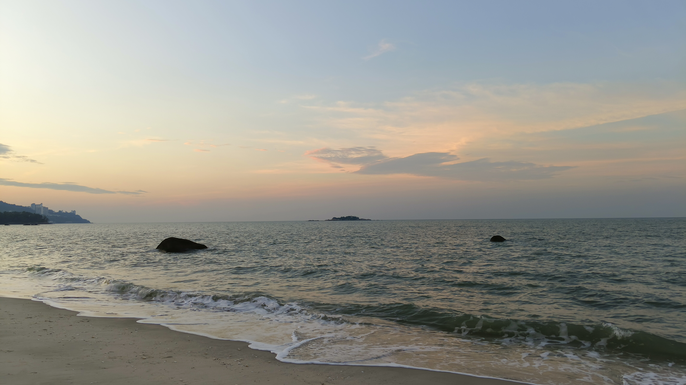

In the second week of the trip, our focus shifted to biodiversity and urbanisation, redirecting our research areas. At Penang Youth Park, we met Dr. Jo Leen and learned about the Langur Project Penang. Initially, the narrower focus caused confusion, as it felt more specific than our original topic.
We were uncertain about whether this new direction would address the broader issues we wanted to explore. However, through group discussions and consultation, we gradually gained clarity and grew more confident in our understanding.
Dr. Jo Leen’s insights were pivotal, particularly her statement: “There is no win-win situation, only a win some, lose some.” She showed us how urbanisation and biodiversity can coexist with sufficient understanding and prioritisation.
This experience helped us refine our perspective and align with our reframed statement. It provided a clearer and more actionable direction for our project.
